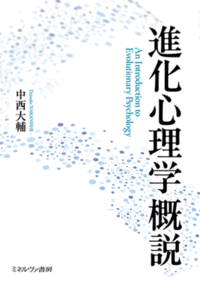

弧牛忘路――編書牛事
草野善太（くさの・ぜんた、1987年－）は、日本の書籍編集者。人文・社会科学の学術書を中心に、教科書、思想・批評、心理・行動科学などの領域で編集・出版活動に従事している。

| 基本情報 | |
| 生年 | 1987年、福島県生まれ |
|---|---|
| 肩書 | 書籍編集者 |
| 所属 | ミネルヴァ書房 編集部 |
| 担当 | 人文・社会科学系書籍／大学教科書 |
| 関心領域 | |
| 言語／思想／政治理論／宗教／進化心理学 | |
現在、企画として関心がある主題
※下記に限らず、人文・社会科学領域の書籍企画について広くご相談ください。
①〈声〉を主題とした研究書、批評、教科書——様態的存在論序説
②生成AI時代の「文体練習」——もうすぐ絶滅するという翻訳という営みについて
③マルクス、フロイト、ニーチェ――近代啓蒙の底が抜けた力の時代
④規範理論——ポスト構造主義フェミニズムの理論的達成（と後退）
⑤差別なき文化の（不）可能性——暴力（欲動）を社会的に処理する方途の模索
担当書籍
▶進化心理学概説
A5判・並製・336ページ
本体価格3,200円（+税）
2026年4月24日発売
ISBN：9784623100125

その感情には、数万年の理由がある。恋も裏切りも協力も──進化が仕込んだ心の設計図を読み解く
なぜ人は愛し、嫉妬し、助け合い、時に裏切るのか。進化という視点から人間の心と行動を読み解く「進化心理学」は、心理学のなかでも新興の、しかし急速に発展を遂げている分野である。俗流の言説が先行しがちなこの分野において、性淘汰・利他性・感情・文化・脳の進化まで全体像を網羅し、単著で描ききった、研究者から学部生まで手に取れる待望の一冊。▶編集後記
「ああ、君か。」ノックの先から聞こえてきた最初の一言に、転学部を決めていた心はその強張りを増す。眼鏡とともにかきあげられた前髪、そのあと向けられた眼差しに圧迫はなく、さりながら計りがたさを湛え、逸らされることはなかった。
「教養学部に転学したく、署名のご依頼にあがりました」
「どうして？」
応じて話したことの記憶はなく、しかし、一息挟んでの語り出しはありありと蘇る。
「民というのは、ちゃんと食にありつくことができれば幸せなんですよ。そうそう、だからこそ統治というのはね...」
ためにするでもなく、こちらを咎めるでもなく、まして親密さのふりをするでもなく、とまれ中国その他の古典を引きながら、統治や制度、慣習や習俗といった事どもが朗々と語られる。それぞれは小難しくもなく、平明な言葉であるのに、諳んじて引かれる文言をつゆほども知らず、いや、だからというべきか、さて、何を言っているのか。分子生物学者が古今東西の古典を縦横にひき紡ぐ、ささやかな、しかし確固たる語り口に、驚く。
署名の入った書類を受け取る。去り際、ドアに手を伸ばす私の背後から声がかかる。「きみ、この分野もぼくの指導も、気に入らなかったろう。まあ、学ぶとよいですよ。」
比べて少なくない時間が、ドアを閉めてから流れた。惰性と怠慢とに運ばれつつ、埼玉から京都へ。挙句の編集という机で、名も忘れてしまったこの先生のことを思い出す。
先生、あの中国の古典は、『十八史略』の鼓腹撃壌のことですよね。モンテスキューの『法の精神』にも、「われわれをあるがままでいさせてほしいものだ」という一節があって、そうそう、あのあと私は京都にいって、18世紀のフランスの思想家たちを学んだりしたんですよ。法に何ができるのかというより、法に何ができないのかということ、いかに統治が重層的に決定されているか、もって専制を退けようと考えた彼は、なかでも18世紀最高の知性との評価もあります。進化心理学も、そうした重層性の一角を照らしているのかもしれないと思ったのです。先生は――
聞いてみたいこと、話してみたいことが、尽きず脳裏を駆ける。
「でもきみ、この分野もぼくの指導も、気に入らなかったろう」。
そんなことはない、あなたに最後学べてよかった。去り際のドアの隙間から、そう返すこともできたはずだった。いまやそれは、手遅れの隔たりのなかに沈んでゆくばかりなのだけれど。
一度は捨てた学問分野に、斜交いながら接するものを上梓することになるとは、何の因果か。まして、自社への納品が四月の一日となれば、何かに化かされているのではないか、とも。
並行して担当している企画は数あるなかで、結局これが先んじたことは、偶然といえば偶然に過ぎず、それでもいささかの因縁を感じずにはいられない。それは否定すべくもない、私の人生の何がしかの帰結なのだと思う。
「誰があなたに何を言い、何を言わなかったのか。あなたは何を感じ、何を感じなかったのか」＊2、そのすべてがいつぞやかあなたに去来し、来し方の思いなしを組み替え、踏み出す行く末の足元をなす。「由来はそれでも未来に名残る」＊3。さればこそ、「過去に触れるときに吹く風は、希望の約束である」＊4ことを願う。
＊3 ハイデガー『杣道』
＊4 田中純『過去に触れる』
▶未来思考をはじめる――読み、描き、つくる10の技法
A5判・並製・208ページ
本体価格2,200円（+税）
2026年9月15日発売
ISBN：9784623101078

将来を考えろと多くの人は言う。けれど厄介なのは、そのための方法を誰も教えてくれないことだ
未来の課題はやっかいだ。正解がなく、善悪も問われ、捉え方によって解決策が変わり、間違えば取り返しがつかなくなる。エビデンス・ベースの未来予測はディストピアばかり、かといって素朴に明るすぎる未来を信じられるわけでもない。欲しいのは、虚勢でも閉塞でもない未来、平熱で考える望ましい未来だ。そのための思考法を体系的にまとめた、はじまりの一冊――それでもこの世界で生きていく、すべての人へ。▶編集後記
▶「倫理プロトタイピング」から考える、『未来思考をはじめる』という本の位置づけ
academistで、こんな研究プロジェクトが始まっています。「フィクションによって未来の倫理的問題に備える――倫理プロトタイピングの挑戦」（矢歌礼次郎氏・東京大学大学院総合文化研究科博士課程が代表）。
「倫理プロトタイピング」とは、科学技術や制度、文化が変化した未来社会をフィクションによって具体的に描き、そこで必要になる価値や規範、制度をあらかじめ考えてみよう、という試みです。
製品開発では、いきなり完成品をつくるのではなく、まずプロトタイプ（試作品）をつくり、実際に使いながら問題点を発見します。それと同じように、未来社会の「倫理」そのものを試作してみる。しかも、現在の延長線上にある一つの未来ではなく、複数の未来を想像しながら検討する、というのがこのプロジェクトの特徴です。
この説明を読んでいて、「この巡りあわせはなんだ…！？」と驚きました。私が担当編集した上月翔太著『未来思考をはじめる――読み、描き、つくる10の技法』（ミネルヴァ書房）の刊行が9月15日に控えているからです。
もちろん、『未来思考をはじめる』は倫理プロトタイピングそのものを論じた本ではありません。むしろ、さまざまな領域で「未来について考える」ときに必要になる考え方や技法を、初学者向けに広く整理した入門書です。
本書が扱うのは、未来の兆候を見つけること、データから予測すること、予測から外れるさまざまな未来を想像すること、望ましい未来を描くこと、そしてそこから現在の課題や行動を考えること。未来を「当てる」ための本ではなく、複数の未来を読み、描き、そこに向かって何をするかを考えるための本になっています。
そう考えると、『未来思考をはじめる』と「倫理プロトタイピング」には、かなり多くの接点があります。
たとえば本書では、フォアキャストを「過去や現在の延長線上に未来を捉える」アプローチ、バックキャストを「先に未来を定め、そこに至る過程を考える」アプローチとして紹介しています。また、SFプロトタイピングについても、SFの制作過程を利用して、とくに新しい科学技術とその社会的影響を考える方法として紹介されています。プロトタイプを実際につくったり、ロールプレイなどを通じて未来を疑似体験したりする「体験的未来」も扱っています。
さらに興味深いのはELSIとの接続です。新しい科学技術では、「技術的に可能か」だけでなく、その普及によって倫理的・法的・社会的にどんな問題が起きるのかを考える必要があります。本書では、こうした問題には技術の専門家だけでなく、倫理や法律の専門家、さらには実際にその技術とともに生きる市民が関わる必要があると説明しています。
ここまでは『未来思考をはじめる』にも登場します。では、倫理プロトタイピングの新しさはどこにあるのか。
私には、プロトタイプする対象を「未来の技術や生活」から、さらに一歩進めて「倫理規範そのもの」にまで広げていることにあるように思えます。
たとえば、人間の意識をコンピュータに複製できる未来を描くだけではない。その社会では「人格」とは何なのか、一人一票という原則はそのままでよいのか、相続や責任の制度はどうなるのか――そこまで考え、新しい規範や制度をいったん「試作品」として物語の中に置いてみる。そして、その規範が新たな矛盾や葛藤を生まないか、もう一度検討する。academistのプロジェクトでは、こうした試みを「規範的プロトタイピング」「構想的プロトタイピング」として方法化しようとしています。
そう考えると、『未来思考をはじめる』は倫理プロトタイピングの「簡易版」ではありません。むしろ、こうした専門的な応用を理解するための「基礎地図」あるいは「共通文法」を提供する本と位置づけるとよいのかもしれません。
フォアキャスト、バックキャスト、複数の未来、SFプロトタイピング、ELSI……。それぞれの言葉を知っているだけでも、「倫理プロトタイピング」が何を組み合わせ、どこからさらに先へ進もうとしているのかが見えやすくなります。
担当編集者として、刊行した本がこうした新しい研究の動きとつながって見えてくるのは、とても面白いことです。
「未来について考える」とは、未来を予言することではない。まだ存在しない社会を具体的に想像することで、現在の私たちの価値観や制度を問い直すことでもある。
『未来思考をはじめる』と「倫理プロトタイピング」。関心のある方には、ぜひ両方を行き来しながら読んでみていただきたいと思います。
▶書評
▶変容と微睡——デカルト道徳哲学の射程
A5判・上製・336ページ
本体価格6,500円（+税）
2026年12月刊行予定
ISBN：9784623100101

こんなに人間らしいデカルトを、見たことがあるだろうか――。
明晰判明、理性の人として知られるデカルトが、悲嘆におしひしがれ、心労に疲弊しているなかでも、主体が持つ身体への信頼を、道徳において語る。それは、知の探究とそれに基づく主体の変容だけではなく、生きられた層に堆積された時間の厚みのなかで、魂の平静を求め、感覚に微睡み満足することを目指す、道徳の哲学であった。本書は、これまで等閑視されがちであったデカルトの道徳哲学を、著作のみならず書簡を精緻に読解することで再構成し、これまでの定説を覆す。そう、たしかに「デカルトはそんなこと言ってない」。形而上学者でもなく、自然学者でもない、道徳哲学者デカルトの姿が、ついに描きだされる。
▶ミネルヴァ・カルティヴァ ライブラリー
▶コンセプトノート
（詳細後日）
▶法的思考へのログイン――トピックから学ぶリーガルマインド
▶しくみが見える憲法学——日常の憲法問題を掘り起こす
▶しくみが見える法学——くらしに法を透かし見る
▶しくみが見える企業法——会社を動かすルールとは
▶しくみが見える経済学——身の回りから大局へ
▶これからのスポーツと健康を科学する
▶新しいスポーツ社会学をひらく
▶これからの起業を科学する――アントレプレナーシップ入門
▶ミネルヴァ・モダンクラシックス叢書
2027年夏以降の刊行開始を目指して準備中
その他準備中
編集についての考え方・取り組み
書籍企画を考える際、私は「必然性・社会性・資産性」という三つの軸を意識しています。なぜこの著者がこの本を書くのかという過去からの必然、いまの学術や社会にどう介入するのかという現在性、そして刊行後に著者・出版社・読者それぞれに何を残すのか、そしてその本で何をしていくのか、何がなされていってほしいか、何と接続されていってほしいか、という未来への持続性です。これらを著者・出版社・読者の三つの立場から考え、九つの観点から企画の輪郭を探ります。そのうえで、研究の核を損なわず専門領域の外へ射程を開き、書名、構成、目次、文章へと「読む理由」を具体化していくことを、編集の仕事だと考えています。
| 必然性（過去） | 社会性（現在） | 資産性（未来） | |
|---|---|---|---|
| 著者 | これを書かざるをえない経緯があるか | 学術的・社会的文脈に応答しているか | 今後の研究キャリアを長く育むものか |
| 出版社 | 刊行実績や理念と深く結びついているか | 社会的議題に介入しうる力があるか | 今後利益・評価・ブランド強化になるか |
| 読者 | 自分の問題として引き受けざるをえないか | 社会の見方を変えるきっかけになるか | 参照され読み返され続ける価値があるか |
ここで言う「読む理由」を専門領域の外へ届かせるとき、三つの作業が要ります。ひとつは概念の再配置——新しい理論的フレームを導入し、研究の射程を他分野へ開くこと。ひとつは読者層の拡張——専門領域の外にも届く語り方・見出し・目次・文脈を模索すること。そしてもうひとつが学際的接続——複数の分野を結びつける場をつくり、社会的議論の呼び水にすることです。研究の核を損なわずにこの三つをどこまで進められるかが、学術書の企画における勝負どころだと考えています。
助成は目的ではなく手段である。「助成があるから出す」「採択期限があるから急ぐ」とは考えないようにしています。必然性・社会性・資産性の三軸が揃っているかを先に確かめ、助成はその実現を後押しする手段として位置づける。順序が逆になると、刊行された本が誰にも引き受けられないまま残ります。
価格は内容ではなく構造で決まる。本の定価は、紙代と流通コストと初刷部数に左右されます。「価値ある内容だから安くする」は通じません。だからこそ企画段階から原価を意識し、完成原稿の質を高めて校了までの往復を減らすことが、著者と出版社の双方にとっての利益になります。安く届けたい——つまり初刷部数を増やしたい——のであれば、それだけの規模が実際の販売と見合う見込みを、企画の段階でつけておかなければなりません。
編集者は専門家ではない。著者と話すには専門的なことをきちんと勉強してからでなければ、あるいは自分がよく知る分野でなければ、という気持ちもわかります。けれど編集者は研究者でも専門家でもありません。知の主体ではなく、知を想定された主体であること。もちろんそのためには教養が必要、という話にはなるのですが。「自分の知っていること」だけで勝負していると、やがて「自分の知っていることしかできない」という不自由に突き当たります。おもしろそうだ、という直観を磨き、会いに行った先で学べばよい。動きながら考えられることは、これからの編集者の強みになるはずです。上のマトリクスは、そうした思いつきや出会いを具体化するための道具として使っています。
▶研修を設計する
社内の新人研修の設計と進行を担当しました。講義形式ではなく、参加者で議論する形を採ることにしました。
設計の出発点になったのは、初回に出た「全体の業務フローと、部署間で協働するタイミングを知りたい」という質問でした。個々の作業の手順は、聞けば誰かが教えてくれます。けれど本当に困るのは、自分がいま全体のどこにいて、次に誰と何をするのかが見えない状態です。何がわからないのかがわからない、という状態をほどくこと。
そこで、各作業のマニュアル的な教示ではなく、自分の現在地と前後左右、そして協働の相手が見える図をつくり、それをもとに議論する形にしました。狙いは、作業手順を覚えてもらうことではなく、「何を上司に聞けばよいか」を自分で判断できる状態をつくることです。
扱ってきた主題は、企画立案の考え方、出版流通と決済の三者構造、研究助成・出版助成の制度史、そして取次をめぐる現在の状況です。とくに出版助成については、学術振興会の創設から現在の採択率低下まで、制度がどの時代の力学のなかで形を変えてきたのかを辿りました。制度の背景を知ることと、申請実務を回せることは、別の能力のようでいて地続きだと思うからです。
第2回で配った、書籍制作の全体業務フローです。企画書の提出から入庫・献本まで、中央が主工程、左右が並行して進む作業です。
研修の資料をつくる作業は、結局のところ、自分が何をわかっていて何をわかっていないのかを確かめる作業でもありました。
以下は、出版助成をめぐって配った二回分の資料です。
▶出版助成（科研費）の実務——スケジュール・手続き・出版社との連携
科研費の出版助成の採択率は2003〜06年度の43.6%から2024年度の33.3%へと低下し続けている。3件に1件しか通らないこの狭き門に、著者から相談を受けたとき、編集者は何を知っていなければならないか。スケジュール、手続きの変遷、出版社として留意すべきポイントを整理する。
1 採択率の推移
| 2003〜06年度 | 2023年度 | 2024年度 | 20年間の変動 |
| 43.6％ 平均6億6000万円 |
35.2％ | 33.3％ | ▼ 10ポイント |
2 年間スケジュール
| 7月中旬 公募開始 |
→ | 8月上旬 ID取得 |
→ | 9月 公募〆切 |
→ | 翌3月 審査結果通知 |
→ | 翌4月 交付内定 |
→ | 翌6月 交付決定 |
※ 所属機関の学内締切は公募〆切より前。学内事務との連携を早めに開始すること。
※ 書名（副題含む）と価格は応募〆切時点で確定、以後変更不可。頁数はほぼ確定で若干の増減のみ。
※ 若手研究の審査結果通知は2月（上記より1ヵ月早い）→後述
3 手続きの変遷――今と昔
出版助成の手続きは年々厳格化している。以下の対比は、制度がどれだけ変わったかを示すと同時に、出版社が応募前から関与すべき領域が広がっていることを意味する。その背景については、後述の「戦後史」も参照のこと。
| 現 在 | 以 前 | |
| ① | 所属機関経由での申請・交付・納付 | 研究者個人による申請・交付・納付 |
| ② | 完成原稿の提出が必要 | 不要（あるという体での申請が可能だった） |
| ③ | 応募後の書名変更は不可 | 変更可だった |
| ④ | 計画調書の記述量が大幅増（7〜8枚） | 10年前は3枚程度 |
| ⑤ | 複数の出版社からの相見積が必要 | 不要だった |
| ⑥ | 出版社による発行部数積算書が必要 | 不要だった |
| ⑦ | 出荷先明細等による完了報告が必要 | 不要だった |
4 出版社との連携ポイント――フェーズ別
上記の制度新旧対比からもわかるように、出版社は申請者である著者と連携し手続きの準備していかなければならない。官僚制プロンプトに対するしかるべき出力を人間AIとして要請されているともいえるかもしれない（必然性＊社会性＊資産性のマトリクスは、こうした官僚制プロンプトに対するプロンプト返しとしても着想・構想されている。そしてそれは社内という組織に対するそれでもあり...）。官僚組織から金を引っ張ってくるためのロジックを案出する作業と、必要書類の作成と、その入力作業とで申請者（著者）は多大な心労を伴う。編集者はその補助も一部努めることとなる。以下にフェーズ別のポイントを整理する。
【応募前】
| 確認事項 | 編集者が知っておくべきこと |
| 著者の資格 | e-Radに登録済みで研究者番号を持つ「研究者」であること。所属機関経由で申請するため、著者の所属先の事務体制も確認。 |
| 印税 | 科研費出版助成の場合、著者への印税はゼロ。著者にとって「憧れるのをやめましょう」案件。早い段階で明確に伝えること。 |
| 博論の加筆修正 | 博士論文をそのまま本にするのではない。口頭試問の反映、追加論点の執筆、加筆修正増補が求められる。「当該刊行物において新たに加わった知見等」が採否を分ける。 |
| 図表・写真 | 本文とは別に単価設定される。見積額に影響するため、多めに計上しておいて後から削るのはOKだが、逆（後から増やす）は見積が合わなくなる。 |
| 書名の確定 | 応募時に提出した書名は以後変更できない。編集者が応募前の段階で書名検討に関わる意義がここにある。 |
| 相見積の手配 | 出版を引き受けた出版社・編集者に、相見積の手配方法を確認すること。著者側で他社に依頼するケースもあるが、「見積だけ」を渋る出版社も多い。→後述。 |
【応募時】
| ▶ 応募時の勘所――申請書（計画調書）で問われていること 計画調書は7〜8枚に及び、うち4枚が刊行物の内容記述に充てられる。以前の3枚時代と比べ、調書の重要性は格段に増した。審査委員は原稿本体を通読するとは限らず、調書で概要を判断する場合もある。つまり、原稿に不十分な点があっても、調書でPRできればチャンスはある。 調書で明確に答えるべき問い： ① 類似・関連する国内外の研究成果との違い、刊行の目的・意義・学術的価値・国際的位置づけ ② 当該年度（または翌年度）に刊行する意義と学術的価値――つまり「なぜ今か」 → ここが企画三原則の「社会性（現在との接続）」に直結する。不採択理由の筆頭（約⅔）は「予算配分の都合」と「刊行の緊急性が低い」に二分される。「緊急性」の説得が鍵。 また、「本刊行物が学術の国際交流に対して果たす役割」も問われる。自身の国際交流実績を示し、図書の刊行がそれをさらに促進するというロジックを立てる。 目次（部・章・節）は原稿とは別に書類として提出する。「内容が的確に把握できるよう」にすること。論文調の機能的な節タイトル（「本稿の問題設定」「本稿の分析方針」等）では弱い。ここでも編集者の目次提案が活きる。 |
| ▶ 相見積の論点――学術書出版は「受注型の事業」ではない 2007年に相見積（競争入札）が義務化されたが、この制度は学術書出版の実態と根本的にかみ合わない。 印刷や工事のような受注型事業であれば、仕様を出して複数業者に見積もりを取り、価格で比較するのは合理的である。しかし学術書の出版社は、応募以前の段階から著者と企画を育て、原稿の構成や読者設定を検討し、書名や体裁を詰めている。出版助成に応募する時点で、出版社はすでに共同制作者として関与しているのであり、その段階で「では出版社を選び直してください」と言うのは、実態にそぐわない。 編集者としての対応：自社が本命の場合は、著者に相見積の手配方法を説明し、必要に応じて対応する。自社が「相見積要員」として依頼された場合は、お断り。 |
【採択後】
| 手続き | 内 容 |
| 契約書の作成 | 交付決定通知後、出版社に契約書作成を依頼し取り交わす。 |
| 博論の公開停止 | 学位授与機関に、博論全文公開の一時停止を申請（刊行に合わせて停止するのが通例）。証明・説明資料と論文要約を提出。 |
| 制作スケジュール | 交付内定後に入稿→秋の学会シーズン（9〜11月）に刊行、または交付決定後に入稿→年末〜翌春の学会シーズンに刊行、が典型的なパターン。 |
5 不採択時の代替策
| ▶ 不採択時の代替策――「助成がなければ出さない」で終わらせない ① 科研費「若手研究」への同時応募 出版助成と同時に若手研究にも応募しておく。出版助成が不採択でも若手研究が採択される場合がある。年間支給額の半分までは用途フリーで使えるため、その分を出版費にあてる手がある。出版助成でもらえたであろう額には届かなくとも、交渉材料の一つにはなる。 ② 科研費不採択への学内補助制度 科研費の審査結果はランク付けで通知される。所属機関によっては、不採択だが高評価だった場合に別途補助制度を設けているところがある。著者に確認を促すこと。 ③ その他の助成金（学会・財団） 学会独自の出版助成や、各種財団の研究助成にも出版費を含められる場合がある。著者が所属する学会の制度を一緒に確認する姿勢が、信頼関係の構築につながる。 |
| ▶ この回のポイント ① 出版助成の採択率は20年で10ポイント低下し、現在33%。3件に1件しか通らない前提で動く。 ② 手続きは年々厳格化しており、完成原稿の提出・書名確定・相見積・部数積算書など、応募前の段階で出版社が関与すべき局面が多い。編集者の仕事は、応募のはるか手前から始まっている。 ③ 計画調書の出来が採否を左右する。とくに「なぜ今か（緊急性）」の説得が鍵であり、これは企画三原則の「社会性（現在との接続）」そのものである。 ④ 不採択でも代替策はある。若手研究・学内補助・学会助成を組み合わせることで、刊行への道を閉ざさない。「助成がなければ出さない」で終わらせないのも編集者の仕事のひとつ。 |
▶研究助成・出版助成と戦後日本——学振・科研費はどこから来て、いまどこにいるのか
出版助成は、いまの制度がいきなりできあがったわけではない。学振の創設から90年余り、敗戦、冷戦、高度成長、バブル崩壊、行政改革――それぞれの時代の力学のなかで形を変えてきた。制度の「出自」を知ることは、著者からの助成相談に応じるとき、あるいは企画の意義を社内外に説明するとき、その言葉に歴史的な奥行きを与えてくれる。
| 第一幕 学振はどこから来たか 1932〜1967 天皇の下賜金から冷戦の追い風へ |
| 年代・出来事 | 制度的含意――なぜこれが重要か |
| 1932年 財団法人日本学術振興会 創設 昭和天皇の下賜金150万円（現在の15〜16億円相当）を元手に設立。初代理事長は理学博士・櫻井錠二。 |
櫻井は、金額の多寡より「天皇からの資金」という形式が振興会の権威を確固たるものにすると考えた。制度が出自の「格」によって正統性を得る、という力学は現在の助成制度にも通底する。 |
| 1945年 敗戦 政府補助金（予算の90%以上）が打ち切り。財界・学会の支援で存続。私的性格の学術奨励団体として再出発。 |
国家の後ろ盾を失い、学振は「民」の力で命脈を保った。政府委託事業として学術出版などの事業も実施。 |
| 1947年 「学会誌出版費補助金」として予算計上開始 |
出版助成の原型。「研究を本にする」ことへの公的支援はここから始まる。 |
| 1950年 「研究成果刊行費補助金」新設 |
学会誌だけでなく、研究成果の図書刊行に対する助成が制度化される。 |
| 1955〜56年 実質GDPが戦前水準を回復。「もはや戦後ではない」 日ソ国交正常化、国連加盟（80番目）。 |
日本が国際社会に復帰していく過程で、学術研究の国際的な信用をどう担保するかが課題に浮上する。 |
| 1957年 日本学術会議「基礎科学の研究体制確立について」要望 10月：スプートニク・ショック（世界初の人工衛星） |
文部省は学振の特殊法人化を予算要求するが、認められず。一方、米ソの宇宙開発競争が「科学技術＝国力」という認識を世界的に加速させる。 |
| 1961年 ガガーリン「地球は青かった」 ケネディ「今後10年以内に人間を月に着陸させる」（アポロ計画）池田・ケネディ日米首脳会談 |
日米間の科学協力事業が合意され、学振とNSF（米国科学財団）が実施機関に指定。NSFが国の機関であるのに学振が民間団体では「対等なパートナーシップ」のメンツが立たない――この外圧が特殊法人化への追い風となる。 |
| 1967年 特殊法人日本学術振興会 創設 |
冷戦と宇宙開発という「外」の力学が、学術支援の「内」の制度を動かした。ロケットの噴射口から追い風が吹いた瞬間。 |
| 第二幕 出版助成と学術出版のビジネスモデル 1967〜2004 教科書が専門書を支える構造の成立と崩壊 |
| 年代・出来事 | 制度的含意――なぜこれが重要か |
| 1960〜70年代 出版業界の人的構成が変わる 60年代までは高卒者も多く入社し、社内で叩き上げ的に育てられた。68年の学生運動後、就職先を失った高学歴層が出版業界に流入。 |
この世代が「大学教科書をつくって収益化する」という学術出版のビジネスモデルを確立していく。教科書の安定収益で専門書を支える「内部補助モデル」の原型。 |
| 1970〜90年代 大学進学率の上昇 70〜80年代：第一次進学ブーム（20%→30%台） 90年代：大学設置基準の弾力化等で急上昇2010年代：50%を突破 |
進学率の上昇は教科書市場の拡大に直結する。教科書が売れれば専門書を出す余力が生まれ、専門書がブランドを育て、ブランドが次の教科書を呼ぶ――この好循環が成立した時代。 |
| 1986年 対象種目の拡充を機に「研究成果公開促進費」へと名称変更 |
現在の「科研費出版助成」の制度名称がここで確定する。 |
| 1990年 総量規制→バブル崩壊 |
「行政改革」＝公務員削減の潮流が強まる。企業は基礎研究・中央研究所を廃止・縮小し、研究者が大学へ還流。 |
| 1991年〜 大学院重点化 学部中心の大学組織を大学院（研究科）中心へ再編。定員の大幅拡充。 |
研究力強化を大義名分としつつ、就職先のない層の受け皿にもなった。大学院生の増加は、博士論文の出版需要を押し上げる一方、ポスト不足という構造問題を生む。 |
| 2001〜03年 小泉構造改革「聖域なき構造改革」 特殊法人等整理合理化計画（閣議決定） →独立行政法人日本学術振興会として設立（2003年） |
国立大学法人化（2004年）と軌を一にして、学振も独法化。国の直接管理から一歩離れた「自律的運営」の建前が導入されるが、予算は国から交付される構造は変わらない。 |
| 2003〜06年度 出版助成規模 平均6億6000万円 採択率 43.6％ |
この時期が出版助成の「黄金期」にあたる。採択率4割超は、以後回復していない。 |
| 第三幕 いま何が起きているか 2007〜現在 予算半減、採択率低下、そして |
| 年代・出来事 | 制度的含意――なぜこれが重要か |
| 2007年 科研費出版助成の応募時・内定時に相見積もり（競争入札）が義務化 |
学術書出版を「受注型の事業」とみなす発想への転換。大学出版部会や各種学会から改善要望が出される。 |
| 2007〜08年 リーマンショック、金融危機 出版助成予算がほぼ半減（7億円弱→3.7億円） 採択率が4割台→2割台に急落 |
大学出版部協会理事長（当時）は「特に人文・社会科学にあっては、体系的な『本』の形に研究をまとめ上げて、はじめてその研究が正当に評価される」と訴えた。 |
| 2009〜12年 政権交代、民主党政権 行政刷新会議「事業仕分け」 （「2位じゃだめなんでしょうか」蓮舫） |
学振所管の若手研究者育成事業が仕分けの対象に。研究者コミュニティから強い反対の声。科学技術予算の「聖域」が崩された象徴的な出来事。 |
| 2023年度 出版助成 採択率 35.2％ |
黄金期（43.6%）から約8ポイント低下。 |
| 2024年度 出版助成 採択率 33.3％ |
20年前から10ポイントの下落。3件に1件しか通らない狭き門に。 |
| ▶ この回のポイント ① 学振は天皇の下賜金を出自とし、敗戦、冷戦、宇宙開発という「外」の力学によって特殊法人へと姿を変えた。制度の正統性は、内容だけでなく「格」と「時代の要請」によって形成される。 ② 学術出版のビジネスモデル（教科書で専門書を支える内部補助）は、大学進学率の上昇と出版業界の高学歴化のなかで1970年代以降に確立した。出版助成制度はこのモデルと共存してきた。 ③ 2007年以降、予算半減・相見積義務化・採択率低下が進行している。3件に1件しか通らない現在の状況下で、著者と編集者はどう助成に向き合うか――実務のポイントを確認しておくこと。 |
▶紙の本という形式について
紙の印刷物を束ねた「本」という形式は、それ自体がひとつのオブジェクトだが、その実、本文（内容）や装幀、紙それ自体、印刷から製本、さまざまなオブジェクト（系）が束ねられているものでもある。まったく別の文脈で自律的に制作された系と系を接続ないし衝突させたところからまた面白いモノがでてくるかもしれない。そもそも「本」というのものが内包していた各オブジェクトの自律性を前景化させ（とはいえ本やシリーズの内容やコンセプトととまったく関係がないわけではないのは当然そうしないといけないけど）、新たな価値づけや別の読解可能性などを拓いていく試みにできないだろうか。たとえば装幀についていえば、作家自身が言葉にするのはもちろんよし（制作のみならず文章化にも関心がある人を探したいし、そういう存在になるきっかけにしてもらうでもよし）、あるいはキュレーターが添えた言葉でもいい（作家自身がキュレーションを兼ねるならそれはそれでよい）。とりわけシリーズの場合、装幀について、それぞれに割り当てられた巻の内容とその人の作品とが孕みうる意外な関係性や共鳴性みたいなのを文章にしてもらったら、それはそれで面白いと思った。そういうのが全十巻分、合計10本の記事ができたら、立派な連載企画になるだろう、とも。こうして、ひとつのシリーズに対して、本文をめぐるオブジェクト（訳者解説の一部公開）、装幀をめぐるオブジェクト（作家あるいはキュレーターによる文章）、さらには書評というオブジェクト（これはどちらかというと本文＝内容をめぐるオブジェクトに近いものだけど、訳者ではない読者という点で異なる）、といった複数のオブジェクトを可視化・前景化し、それぞれのオブジェクトを連載などの形でまとめて提示することができたら――おもしろくないか？
▶編集実務の道具をつくる
複数の企画を同時に進めていると、工程管理そのものが本の質を左右します。どの企画がいまどの段階にあり、次に何がいつ必要なのか。それが見えないまま走れば、著者に無理を強いることになり、本来は原稿や校正に充てられたはずの時間が消えていきます。
そこで、手元の道具を自分でつくりアプリ化するようになりました。ひとつは企画の工程管理です。企画ごとに三十以上の工程を置き、校了日から逆算して白焼き・刷了・入庫の日程が営業日ベースで自動的に出るようにしています。チェックを入れれば完了した工程が灰色に落ち、いま手をつけるべき工程と期限だけが前に出てくる。もうひとつは、企画書や製作依頼書、原価計算、新刊ニュースといった各種の書類です。これらは共通する項目が多いにもかかわらず、様式ごとにばらばらに書き直していました。ひとつにまとめ、一度入力すれば全様式に反映されるようにし、判型を入れれば寸法が、頁数を入れれば背幅と重量が自動で入るようにしました。
当初はいずれも表計算ソフト上のものでしたが、外出先では開けないという弱点がありました。いまは打ち合わせの直後にその場で入力し、出社した日に手元で仕上げる、という形に移しています。考えたことを忘れないうちに残せることのほうが、道具の完成度よりも重要だと考えたからです。
道具をつくることは、編集の仕事とは別の作業ではありません。どの情報をいつ必要とするのか、何と何が連動しているのか、どこで手が止まるのか——道具を設計することは、自分の仕事の構造を一度外に出して眺め直すことでもあります。そうして空いた時間を、原稿を読むことと、著者と話すことに充てたいと考えています。
来歴
1987年福島県生まれ。2006年に埼玉大学理学部分子生物学科に入学後、2009－2010年にかけて美大予備校に通い、東京藝術大学への入学を志すも受験失敗。埼玉大学教養学部への転学準備中に東日本大震災で被災。一か月ほど被災地で過ごし埼玉に戻る。一年の休学を経て教養学部へ編入。同大教養学部を卒業後、2014年に京都大学大学院文学研究科博士前期課程（フランス語学フランス文学専攻）に入学。その間、参加した翻訳会で、フリードリヒ二世『反マキアヴェッリ論』とジャック・ネッケル『穀物立法と穀物取引について』（いずれも共訳、京都大学出版会）にかかわった。
2020年に同大学院博士後期課程を中途退学。のち2021年秋にミネルヴァ書房へ入社し営業部に配属される。北陸・中四国・滋賀・京都エリアを担当。主に大学講義用の教科書営業で各エリアを巡回。その後2024年秋に編集部へ異動となり、現在に至る。
関心領域と遍歴
▶関心領域
「関心 interest」という問いについて
学士論文「言語と快楽」（2013年、埼玉大学）は、ジェレミー・ベンサムの功利主義の基礎に、認識論的言語哲学としての「フィクション論」があることを論じる試みだった。しかしその前段には、「関心 interest」とは何か、という問いがある。
17-18世紀において「関心」は、神学・美学・道徳論・統治論・経済学など（美学や経済学は当時において立ち上がりつつあるものであった）が共有する媒介概念だった。デュボスからハチスン、ヒューム、スミスを経てベンサムへと至る思想史的変遷のなかで、「関心」は情動や欲動——理性的にどうしようもないもの——を間接的に操作し整流化するための概念装置として機能してきた（そのようにみなされていた）。学士論文で「脱-関心の感性学」と呼んだのは、こうした「関心」の媒介操作的な性格を、美学と政治哲学の接点において捉え返す試みだった。
言語は、この操作において中枢的な役割を果たす。言語表象（および視覚表象）は、主体化と世界化を同時に開設する。ジャック・ラカン的に言えば、生後まもなく経験される鏡像段階において、子どもは鏡に映った像を「これは私だ」と認知しつつ「しかしこれは私ではない（像は左右が反転した外部の他者だ）」という矛盾を同時に飲み込むことで、自己と他者を分節し始める。この瞬間、言語表象と視覚表象が協働して作用し、世界は統語的に整除されたものとして立ち現れる。主客の分離、三者関係の理解、根拠律や因果律による世界把握の構造が、ここからはじまる。
しかしこの主体化は完全ではない。疎隔において何かが零れ落ちる。「本当にこれが私なのか」という不信は消えることがない。欲動や情動、ラカンが「現実界」と呼ぶものは、この零れ落ちたものとして、言語と統治による操作の外部に残り続ける。「関心」概念の思想史とは、この操作しきれない過剰を間接的に手懐けようとする知的格闘の歴史でもあったのではないか。アナクロニズムの誹りを免れないが、本稿を駆動していた裏の仮説がこれであった。
ベンサムにとって言語論と統治論が通底していたのは、なにより正確な法治を実現するためであったが、いかに情動・欲動を「関心」を媒介に整流化するか——そのために言語表象をかませることで快苦を計算可能にしようとすることが企図としてあったことも見逃せない。そして「存在もフィクション的実体である」というフィクション論の逆説は、この言語操作の徹底として読めるのではないか、というのが本稿が提示する一つのテーゼである。
現在の編集関心——人間と動物の境界、言語論、宗教と法、政治理論と現代思想、心理学と行動科学——は、いずれもこの問いの延長線上にある。言語と表象が世界を構造化し主体を形成する、そのメカニズムと限界を問い続けることが、このチャートの示すところのものである。
▶遍歴
▶ポストモダンの陽気な目茶苦茶への季節外れな独学応接
分子生物学科に在籍していたものの、二年次以降授業はほとんどでなくなり、アパレルメーカーで２年ほど販売に従事。そのなかで、ファッションではANREALAGE、THEATRE PRODUCTS、CICATA、Post Overallsなどのブランドを好むようになる。営業中に店舗でかけられていた音楽をきっかけに、六本木のイエローなどのクラブハウスやサマーフェスに行くなかで、NujabesやSpecial Others、佐藤タイジ、Pe'zmoku、DJ Kentaro、Daishi Dance、Capsule、MADEMOISELLE YULIA、その他ハウス・テクノを脈絡なく聴き知るようになる。また空間とその演出がこの身体に与える効果、あるいはそれに対する身体の反応に興味をもつようになる。なかでも吉岡徳仁の作品に衝撃を受け、都内の美術館（なかでもワタリウム美術館が好きだった）に足しげく通うようになる。
アパレルを退社し、学部を休学して、美大受験のため美大予備校に通いはじめる。東京藝大一本で勝負するも受験に失敗。その過程で芸術家や美術家、建築家の書籍を読むようになる。それらの読書の過程でいわゆる「批評」の存在を知り、がぜん興味を持つようになる。「批評空間」や「ニューアカ」といったあたりから乱読を開始。小林秀雄の全集や九鬼周造全集、ベルクソンの翻訳や研究書、アフォーダンス論や郡司ペギオ幸夫、フランス現代思想、その他、小泉義之や絓秀実と田中純、等々の多くを買ったり借りたりで読み漁る。ゼロ年代批評の議論も一部追いかけはしてみたが、いわゆる当時のオタクコンテンツに縁がない人生だったこともあり離脱した。
転学部先ではウィトゲンシュタイン以後の言語哲学や分析哲学、３N哲学を研究する学生が多く、それらの議論にも首を突っ込むも、徐々に表象文化論的な方向へと読書が集中していく。ジョルジュ・ディディ＝ユベルマンの『イメージ、それでもなお』に端を発する表象不可能性の問題に関心を持つようになる。
学士論文はこの表象不可能性の問題、『イメージ、それでもなお』の読解を希望したが、指導教官からは古典的な思想史へ立ち返ることを助言される。精神分析、とりわけジャック・ラカン（というか正確には樫村晴香）に激烈な影響を受けていたこともあり、ラカンが言及している思想家に注目。そこでジェレミー・ベンサムの言語論をラカンが論じていることを知り、ベンサムの言語論読解を行った。
大学院では、「世界」が視野に入り、おおよそ現在と同じような世界地図も作成され、「歴史」や「経済」といったものが学的対象としても自律してくる18世紀に惹かれ、ベンサムの思想形成に影響を与えたエルヴェシウスの研究を志した。博士課程を中退後、嘉戸一将『主権論史』を読み、激烈な衝撃を受けてルジャンドルに傾倒。主権や制度と主体形成、端的に言えば規範と疎隔の問題にたどり着く。
▶わたしは牛であった――震災の経験
表象の議論に徐々にひかれていったことの決定打は、震災の経験であった。
春休みで実家に帰省していたときに東日本大震災に被災した。福島で、図書館にいたときのことだ。原発がメルトダウンし放射能が風で拡散している最中、なにも知らぬ（知りたくても手段がない）まま物資を求めて方々を歩いていた。続く余震と緊急地震速報とで三半規管等も狂っていたのだろうか、止まっているはずなのにずっと揺れている感覚に襲われ、耳鳴りのように地震速報の幻聴が響き、存在が根底から揺らいでいた。安全地帯にいて「揺さぶる／揺さぶられる」のは心地が良いだろうし、それゆえに比喩としてよく用いられているが、現場でのそれは文字通り生きた心地がしない、二度と味わいたくはないものだった。しかし埼玉に戻ると、まったく異なる日常が営まれており、困惑せざるをえなかった。それでも都内ではデモが行われているらしいと知り、新宿に出向いて参列しもした。その夜、柄谷行人が壇上にあがるも、前置きはいらねえ！早くしろ！と聴衆にせかされて、あの有名（？）な一言を発したこと＊1、そして聴衆の再度の熱狂、それを覚えていることだけは、ここに書きとどめておこう。そして同時に、否定するでも肯定するでもなく、わたしはそこから離れたこともまた。
余震の揺れと警報音が肉体に沁みつき、福島から埼玉へ、当事者（被災者）から非当事者へ、あの体験を自分のために表す言葉も、あるいはそれに準ずるなにものをも見つけられない。そんなとき、埼玉大学に小出裕章先生を読んで講演をしていただくことになり、その会場の手伝いをすることになった。講演で最後にスクリーンに小出先生が映し出した、たった一枚の写真がある。それは原発に程近い地域で誰もいなくなったかの地の道路ど真ん中を牛が歩いているものだった。あ、私だ――それがすべてだった。
あのイメージに出会ってから、少しずつことばを紡ぐことができるようになった。物語というのではない。フラッシュバックしてくるものに、少しずつことばをあてがうような。ひとはそれを散文詩のようなものだと言うかもしれない。野蛮だとさえ言う（言った）だろう＊2。野蛮でよい、わたしは牛なのだから。牛の詩が世界を変えることはない――「わたしの詩は世界を変えないだろう」（パトリツィア・カヴァッリ）＊3。それでもなお、いやだからこそ、わたしは生きていられるのだろう。いつかわたしを見かけたときは、「牛がいるね」＊4とお声がけください。
＊2 世間では、アドルノのあの文句をもじって喧しく倫理が盛況だったことも、書きとどめておこう。出版業界も助かったことだろう。
＊3 全体訳は下記の通り。
誰かがわたしに言った／きっとあなたの詩は／世界を変えないだろうと
わたしは答える、そうきっと／わたしの詩は／世界を変えないだろう See, Patricia Cavalli, Mes poèmes ne changeront pas le monde, Préface par Giorgio Agamben, Trad. de l'italien par Danièle Faugeras et Pascale Janot, Paris, Antoinette Fouque, 2007, p. 17.
＊4 宮崎駿『風立ちぬ』
書いたもの・話したこと
▶要旨
本論はベンサムの功利主義の基礎に、認識論的言語哲学としての「フィクション論」があることを論証する試みである。第一章では、『道徳と立法の諸原理序説』を 18 世紀趣味論の文脈に置き、「関心 interest」概念の思想史的変遷（デュボス、ハチスン、ヒューム、スミス）を経由して、ベンサム道徳論を「脱-関心の感性学」として再定位する。第二章では『言語学試論』を読解し、原初の「全一命題」の分解という起源神話を起点に、言語の自己改良的傾向＝自己超越の論理によって人間が動物から分かたれるという議論を抽出する。第三章では『存在論断章』を読み、リアル／フィクションの二項対立を、「実体 entity」概念を装置として導入することで内破させる。「存在」自体がフィクション的実体であるという逆説に至る一方、ベンサムは「原型イメージ抽出法」と「言い換え法」によって快苦を言語化し、功利計算を可能にする技法を編み出した、と結論する。
▶自己評——現在からの振り返り
10万字にのぼる論文で多岐にわたる論点を一挙に扱おうとするあまり、自身の解釈枠組み（脱-関心、自己超越、差延、脱構築）とベンサムのテクスト自体との距離を、論理的に管理しきれていない。「論者がベンサムに何を読み込んでいるか」と「ベンサムが何を述べているか」のレイヤーを可視化し腑分けして論じきることができれば、修士論文以上になった可能性はあるが、そのように丁寧に腑分けしていったところで本論の主張が維持できるものかどうかもまた疑わしい。現代思想の道具立てを援用するのはいいが、アナクロニズムかつ強引な議論となり、飛躍も多々見受けられる。その意味でも「卒論」の域はでないが、その後の自分の関心領域をすでにカバーしているという意味では、草野の原点にある問題意識を素描していたと位置づけることはできるであろう。
▶要旨
本講演は、教科開発学の研究成果を「社会還元」する手段として出版というメディアを論じたものである。出版業界の三者構造（出版社・取次・書店）と再販制度・委託配本制度、ネット書店による価格構造の変容、資源コストの高騰といった現状を概観したのち、研究成果をあえて紙の書籍として出版することの固有の意義を論じる。リポジトリへの論文公開との対比を通じて、書物が「社会的承認」「固定と公共性」「越境の場」という三つの機能を同時に実現する形式であることを論証する。また科研費「出版費」と日本学術振興会「研究成果公開促進費（学術図書）」を軸に出版助成制度を解説し、企画の「必然性・社会性・資産性」からなる三原則と九つの評価軸を提示する。さらに企画立案から校了・刊行に至るプロセスを実務的に解説し、「越境」——概念の再配置・読者層の拡張・学際的接続——を通じて研究成果が「社会的議論の呼び水」へと転換される過程を、具体的な編集事例とともに論じる。
▶自己評——現在からの振り返り
本講演の中心的な提案は、出版企画を「必然性・社会性・資産性」の三軸と、「著者・出版社・読者」の三主体を掛け合わせた九つの観点から捉える評価枠組みを提示した点にある。さらに、編集者自身の研究歴（「利害関心」概念史）を導入として置き、「関心の方向転換」という概念を編集という行為の核に接続している。これにより自己紹介が単なる経歴紹介を超え、講演全体の主題を前景化する装置として機能している。出版業界論は現状分析として堅実であり、価格決定の外部性（内容ではなく紙代・流通コストが価格を規定する）という指摘は、研究者が出版を検討する際に見落としがちな論点を突いている。書物のモニュメント性をめぐる論述は、グローバルサプライチェーン・有限性の哲学・マクルーハン的メディア論を交差させ、「なぜ本か」という問いに対する思想的な深みのある回答を与えている。課題を挙げるとすれば、「越境」の概念がキャリア論企画と目次改訂の二例で示されるものの、教科開発学という本講演の文脈に即した具体例が存在しないため、聴衆にとって自身の研究への接続がやや抽象的に留まる点である。聴衆が研究成果の発信に向けて主体的に動き出すための、より直接的な「次の一手」を示す展開があれば、実践的な完成度はさらに高まったであろう。
牟言芻鳴
▶取次撤退をめぐって──日販の「におわせ」をどう読むか（2026）
──日販の「におわせ」をどう読むか
きっかけ：日経の記事とSNSの反応
5月29日に日経が出した記事がありまして、出版取次大手の日販グループホールディングスとトーハンの2026年3月期決算が出たんですね。両社そろって最終赤字。日販GHDは最終損益が24億円の赤字で、前の期は4億円の黒字だったので、一気に転落です。取次事業の部門経常損益は36億円の赤字で、前期の16億円の赤字から倍以上に膨らんでいる。売上高も前期比10%減の3427億円。一方のトーハンも最終損益11億円の赤字で、前期の18億円の黒字から転落しています。ただ、トーハンのほうは売上高が前期比4%増の4100億円で、文具や雑貨など新規事業が伸びている。赤字の中身がだいぶ違う。
で、この決算記者会見の場で、日販GHDの富樫建社長が何と言ったか。「取次事業の撤退も検討しなければならない環境が迫っているという危機感を持っている」。これが日経に載って、SNSで話題になったわけです。
SNSの反応を見ると、たとえばこういうものがあった。「取次がなくなると再販価格維持は難しいね……公金入れて維持するか、どこかの巨大資本で生かすかしかない」とか、「日販とトーハンが潰れたら……どうすんだ……出版社も書店も中小は軒並み潰れるのでは……」とか。あるいはもう少し冷静なものとして、「取次は単なる流通業者でも卸売業者でもなくて、再販委託制のもとで実質的に出版社への金融を行っている。文字通りの『自転車操業』を支えるその仕組みを支えるのが大手取次」という指摘もあった。
これらの反応を見て思ったのは、たしかに驚くのはわかるけれど、少し誇張しすぎじゃないかということです。
ポイント：言っているのは日販だけ
まず押さえておくべきことがある。「撤退も検討しなければならない」と言っているのは、あくまで日販の社長であって、トーハンのほうはそういうコメントを出していない。大手二社がそろって取次撤退、という話ではまったくない。
そしてもうひとつ。日販が言っているのは取次「事業」の撤退検討であって、日販グループホールディングスという企業グループの解散ではない。日販GHDはエンタメ事業や海外事業など、取次以外の事業も持っている。グループとしては存続しつつ、取次事業を縮小・再編するというシナリオが最も蓋然性が高い。
「公金を入れて維持する」という話も、かなり飛躍がある。取次は私企業間の商取引であって、再販制度維持のために国が取次に補助金を出すというロジックは、法的にも政治的にもハードルが極めて高い。
仮に日販がほんとうに撤退したら：独禁法の問題
とはいえ、仮に日販がほんとうに取次事業から撤退したらどうなるか、というシミュレーションは考えておく価値がある。
大手取次はトーハンだけになる。その他に神田村の中小取次──大阪屋栗田、日教販、中央社などがありますが、日販撤退分のシェアを神田村各社が漁夫の利的に拾えるかというと、それは難しい。そしてなにより、トーハンの事実上の一強状態というのは、独禁法的にアウトになる可能性が高い。
ここで「独禁法的にアウト」というのが具体的に何を意味するか、少し整理しておきましょう。
独占禁止法が禁じているのは、「独占状態であること」そのものではなくて、その地位を濫用する行為です。ただし実務上は二段階で問題が生じる。
第一段階として、公正取引委員会が「独占的状態」に該当すると認定すれば、競争回復措置命令──たとえば事業の一部譲渡──を出す権限を持っています。市場シェアが50%を超え、参入障壁が高く、価格の下方硬直性がある場合などが要件で、取次業はこれらをほぼ満たしうる。ただし、この条項は発動例がきわめて少ない。
より現実的な問題は第二段階のほうです。1社独占になった途端に、トーハンの取引条件設定がすべて「優越的地位の濫用」の審査対象になりやすくなる。掛率の一方的変更、返品条件の締め付け、配本パターンの恣意的操作──いま競合がいる状態では「嫌ならもう一方の取次に乗り換える」という牽制が機能していますけれど、1社体制になったらそれが消える。出版社からも書店からも公正取引委員会への申告が相次ぐ事態が容易に想像できる。結果として、排除措置命令、課徴金納付命令、場合によっては事業分割命令といった行政処分が視野に入ってきます。
つまり、日販がただ撤退するだけでは、トーハン側が独禁法上のリスクを負ってしまう。だから日販は「撤退」を単純にはできないんです。何らかの競争維持スキームとセットでしか事業再編を進められない。日販社長の発言が「撤退も検討しなければならない環境」という慎重な言い回しにとどまっているのも、こうした法的制約を意識してのことだろうと読めます。
独禁法的にアウトにならないための選択肢
では、独禁法的にアウトにならないようにするにはどうするか。大きく三つの方向があります。
ひとつめは、日販側の選択肢として、取次事業を完全に「撤退」するのではなく、事業譲渡や会社分割によって第三者──神田村系の取次や、あるいは異業種の資本──に引き継がせるという形。市場に競争主体を残したまま自社は抜ける、という設計です。公取委との事前相談を経て進めるのが定石になります。
ふたつめは、トーハン側の選択肢として、日販の取次事業を自社に吸収する。ただしこれ自体が、市場の自由な競争を妨げないかという企業結合審査の対象になるので、むしろトーハンとしては積極的に引き受けないほうが安全。仮に引き受けるなら、一部地域や一部機能を第三者に切り出す問題解消措置を公取委に提示する必要が出てくる。
みっつめは、両社の協調路線。取次機能の一部──とくに物流インフラ──を共同出資の別会社に移管して、取次としての営業機能──つまり配本、仕入、掛率交渉──は日販・トーハンそれぞれに残すという構造です。
なぜ第三者への事業譲渡は難しいか：栗田出版販売の教訓
さて、この三つの選択肢のうち、日販側の「第三者に事業を渡して自分は抜ける」というのは、一見きれいに見えるけれど、現実にはほぼ不可能です。理由は単純で、引き受け手がいない。
このことを端的に示す先例があります。2015年の栗田出版販売の経営破綻です。
栗田出版販売は1918年創業、神田神保町に本社を置く業界第4位の取次でした。ただし「第4位」とはいえ、2014年度の売上で見ると日販・トーハンの上位2社の10分の1以下、第3位の大阪屋と比べても半分程度という規模感でした。もともと大手の手が届かないところで小回りの利く取り組みを強みにして生き残ってきた会社ですが、出版不況が進むなかで、旧本社の売却やリストラ、大阪屋との業務提携強化といった手を打っても追いつかなくなった。
2015年6月26日、東京地裁に民事再生法の適用を申請。負債総額は約134億9600万円で、出版取次では過去最大の倒産となりました。
注目すべきは、この破綻が「プレパッケージ型」だったということです。事前に大阪屋によるスポンサー支援と、日販の連結子会社である出版共同流通の支援を取り付けたうえで、法的手続きに入った。つまり、倒れてから救済先を探したのではなく、救済スキームを先に組み立ててから倒れた。裏を返せば、事前に手を打たなければ再建の見込みすら立たないほど、中堅取次の単独存続は困難だったということです。
このプレパッケージ型は出版社の側に強い不信感を招きました。この栗田の破綻で出版社が怒ったのは、やり方がちょっとズルかったからなんですね。順を追って説明します。
まず「プレパッケージ型」というのは何かというと、普通、会社が倒れるときは、倒れてから「誰か助けてくれませんか」とスポンサーを探す。でも栗田の場合は順序が逆で、先に大阪屋と日販系の出版共同流通に「うちがスポンサーやりますよ」という話をつけておいて、救済の段取りを全部組み立ててから、民事再生の申請をした。債権者から見ると「話ができあがってから倒れたのか」という感じになるわけで、当然、不信感が出ます。
次に、もっと実害のあった問題として、返品の処理がある。これが少しややこしい。
出版の取引というのは、取次が出版社から本を仕入れて書店に届けて、売れなかった分は返品で戻ってくる。出版社は取次に対して「本を卸した分のお金を払ってください」という債権を持っている。一方で、売れなかった本が返品されてきたら、出版社はその分を引き取らなきゃいけない。これが通常の流れです。
ところが栗田が民事再生に入ると、破綻前に栗田に卸した分の売掛金は「再生債権」として凍結されてしまう。凍結というのは、すぐには全額返してもらえなくなるということです。弁済率——たとえば債権の何割だけ返しますという割合——でカットされた分しか戻ってこない。
問題はここからで、栗田が破綻した後も、書店の棚にはまだ本が残っているわけですよね。その本が売れなければ返品されてくる。でもこの返品は、破綻後の新しい体制——つまり大阪屋経由——で処理されることになった。
普通に考えれば、出版社としては「返品で本が戻ってきた分と、こちらが栗田に貸していた売掛金を相殺してくれ」と言いたいわけです。100万円貸してて、40万円分の本が返ってきたなら、差し引き60万円だけ返してくれればいいでしょう、と。でもそれができなかった。民事再生の手続き上、破綻前の債権は凍結されているので、返品分との相殺が法的に認められない。出版社は返品を引き取らされたうえに、貸していたお金はカット後の金額しか返ってこない。二重に損をするわけです。
そしてさらに債権者集会で揉めたのが、取次側の代理人の説明です。代理人が何と言ったかというと、「返品というのは、買主——つまり取次——だけが持っている片面的な解約権の行使だ。だから出版社にはこの返品を受け入れる義務がある」と。
これが出版社の側からすると、とんでもない話なんですね。出版業界の取引には「委託」「注文」「買切」といった、いろいろな取引形態がある。委託なら返品できる、買切なら返品できない、注文品は条件による、と。それぞれルールが違う。ところが代理人はそういう商慣行を全部無視して、「法的にはぜんぶ買主の解約権の話です、出版社は受け入れてください」と言った。長年の商慣行で成り立ってきた仕組みを法律の論理で一刀両断にされたわけで、債権者が怒るのは当然です。
最終的に2015年12月の債権者集会で再生計画案が議決権額88.94%、頭数9割超の賛成で可決され、大阪屋が子会社「栗田」を設立、栗田出版販売の事業を吸収分割で引き継いだうえで、2016年4月に大阪屋と合併。統合後の社名は「大阪屋栗田」、通称OaKです。こうして取次業界は日販、トーハン、大阪屋栗田連合の三陣営に集約されたわけです。
この栗田の事例が教えてくれるのは、業界第4位──しかも上位2社の10分の1以下の規模──ですらこれだけの混乱を経なければ再編できなかったということ。では第1位の日販の事業を丸ごと引き受けられる第三者がいるかといえば、それはほぼ考えられない。大阪屋栗田自体が栗田を吸収してようやく「第3極」を維持している状態であって、ここに日販分の負荷がかかったら持ちこたえられない。異業種資本が参入するインセンティブも、年々縮小する市場を前にしてはほぼゼロです。
現実的な道筋：両社協調路線
だからこそ、三つの選択肢のうち最も現実的なのは、両社の協調路線ということになる。
実際、日販とトーハンは物流面での協業をすでに段階的に進めてきています。日販のコンビニ配送からの撤退も、トーハンへの移管という形で行われた。共同配送や倉庫の相互利用も部分的に実現している。
この路線の延長として自然に出てくるのは、物流・配送インフラを共同出資会社──あるいは既存の物流子会社の統合体──に集約し、営業面──つまりどの本をどの書店にどれだけ配本するか、掛率をいくらにするかという交渉機能──は日販・トーハンそれぞれに残すという構造です。コスト面では規模の経済が効くし、独禁法上は営業主体が複数残るので競争が形式的にも実質的にも維持される。公取委にとっても、物流統合は「効率化」として容認しやすく、営業機能の分離が担保されていれば介入の必要性が薄い。
ただし、この協調路線にも難しいところはあって、営業機能を分離したまま物流だけ統合するという切り分けが実務上どこまできれいにできるかという問題がある。配本と物流は本質的に連動しているので、物流会社が事実上の配本権を握る構造になれば、営業主体の分離は形骸化する。このあたりの制度設計が今後の交渉の核になるはずです。
「撤退」は取引条件交渉のジャブとして読む
さて、以上を踏まえたうえで、日販社長の「撤退も検討しなければならない」という発言をどう読むか。
これはブラフ──というか、もう少し正確に言えば、取引条件の抜本的見直しに向けた予告射撃だと思います。
時系列を整理すると、日販はすでに2025年のうちにコンビニ配送から完全撤退し、練馬の物流拠点も閉鎖しています。つまりコスト削減でできることはもうかなりやった。にもかかわらず取次事業の赤字は16億から36億へと倍増した。コスト削減だけでは追いつかないということがはっきりしたわけです。
ということは、次に動かさなければならないのは「収入側」──つまり版元からの口銭や取引条件です。ここで「金融業としての取次」という視点が重要になってくる。仲俣暁生（なかまた・あきお）さんも指摘されていましたが、取次は金融業なのです。どういうことか。
取次は版元に対して、本が売れる前に代金を立て替え払いし、売れなかった分は返品で引き取るという仕組みを回しています。これは実質的に版元への短期融資であり、その金融コストは取次の口銭に織り込まれている。しかしその口銭が物流費の高騰で赤字になっているということは、金融機能のコストを取次がもう吸収できなくなっているということです。
だから「撤退も検討」という発言は、この金融機能のコストを版元に転嫁する──具体的には正味（掛率）の引き下げ、支払いサイトの短縮、返品条件の厳格化──を本格的にやっていきますよ、という予告なんですね。しかも決算記者会見という公式の場で、日経に載る形で言っている。それ自体がすでに版元向けの圧力として機能している。
協調路線の実質：トーハン主導の新体制
そして、この「撤退におわせ」の先に見えてくる協調路線の実質は何かというと、おそらくトーハン主導の体制です。
数字を見ればわかります。トーハンの売上高4100億円に対して日販は3427億円で、すでに700億近い差がついている。日販のコンビニ配送をトーハンが引き継いだ時点で、物流インフラの主導権はトーハンに移っている。今後、物流統合が進めば進むほど、日販は自前の配送網を持たない「トーハンの物流に乗っかる営業会社」に近づいていく。
営業は別建てだと言っても、物流を握っている側が最終的には配本の優先順位や条件交渉で発言力を持つ。独禁法上は形式的に二社が競争している体裁をとるけれど、実質的にはトーハンの発言権が増し、日販がそこに多少のっかっていくという構図になるのではないか。
つまり、大手二社取次体制──実質トーハン1強だが形式的には競争状態を保っている──の版元への発言力が増す、ということです。
版元にとっての含意
ただし、この構図が版元にとって一方的に不利かというと、もう少し複雑な面もある。
取次の発言力が増す方向に力学が働くのは間違いないけれど、同時に取次の側も版元なしでは商売が成り立たない。出版市場の縮小で取次が苦しんでいるということは、版元も同じかそれ以上に苦しんでいるということであり、取次が条件を厳しくしすぎれば版元が潰れ、取次を通る商品自体が減る。
だから「発言力の増大」というのは、取引条件を際限なく自社有利に動かせるという意味ではなくて、むしろ業界全体のコスト構造を再配分する交渉のテーブルに版元を引きずり出す力を持つ、という意味に近い。
「日販とトーハンが潰れたらどうするんだ」という反応は、構図を読み違えている。潰れるとは誰も言っていないし、潰れることを許容できる業界構造にもなっていない。起きているのは、取次というインフラの維持コストを誰がどう負担するかという再交渉の始まりであって、それは破局ではなく、むしろ遅すぎたぐらいの構造調整の入り口なんだと思います。
取次から「おりる」選択肢はあるか
では、取次の条件が厳しくなったら、学術出版社は取次から「おりる」ことができるのか。大手取次がタカ派的に条件を引き上げてきたとき、それに反発して取次から離脱する、という選択肢はどうか。
結論から言えば、おりた先がない。
まず直販。自社サイトで本を売って、注文が入ったら自社で梱包して発送する。これは小規模にはできるけれど、年間何十点も出している版元が全点を直販で捌くのは、先ほど言ったとおり事務コストが膨大になる。
では、取次を通さない毛細血管的な流通経路──たとえば一冊取引所のような仕組みはどうか。一冊から書店が注文できて、版元が直接出荷する。小さな独立系書店と小さな版元をつなぐ仕組みとして注目されていますけれど、学術書はこれにさえ相性が悪い可能性がある。
なぜか。日本に学術書専門の独立系書店なんて、ほとんど存在しないからです。
独立系書店というのは、店主の目利きで棚をつくって、お客さんに「この本、面白いですよ」と手渡しで薦めるような世界です。人文書に強い独立系書店は確かに存在する。でもそれは人文書であって、学術専門書とは違う。社会学の教科書を棚に置いてくれる独立系書店がどれだけあるかというと、正直なところ心許ない。まして、初刷り300部の仏教学の研究書を置いてくれる棚は、独立系書店にもない。
書店の現場で何が起きているか
独立系でなければ大手チェーンの書店はどうか。これも期待しにくい。
全国チェーンの書店で今何が起きているかというと、資金繰りが厳しくて正社員を雇えず、パートやアルバイトで店を回しているところが増えている。本の目利きができる書店員が現場からいなくなっている。
結果として何が起きるか。取次のシステムでランキングに基づいて自動的に配本されてくる本を、そのランキングの順番どおりに棚に並べるだけ。どの本をどこに置くか、どの本を面陳にするか、どの棚を厚くしてどの棚を薄くするか──そういう判断ができる人がいない。だから棚がめちゃくちゃになる。学術書のコーナーがまともに機能している全国チェーンの書店がどれだけあるかというと、かなり怪しい。
つまり、取次を通して書店に本を届けたとしても、届いた先でまともに売ってもらえるかどうかがそもそも怪しい、ということです。
図書館ルートの限界
学術書というと、もうひとつ重要な販路として図書館がある。
大学図書館への納入は、学術書であれば比較的なされやすい。研究者が選書リクエストを出せば購入されることが多いし、出版社からの新刊案内を見て図書館司書が選書する仕組みもある。ただし、大学図書館にも予算の制約がある。とくに近年は電子ジャーナルのサブスクリプション費用が膨張していて、紙の図書を買う予算が圧迫されている大学は少なくない。
公立図書館はどうかというと、こちらはさらに厳しい。公立図書館の選書基準は郷土資料が最優先で、学術書の優先度は低い。住民サービスとしての図書館は、ベストセラーや実用書を揃えることを求められがちで、初刷り300部の学術書が公立図書館の棚に並ぶ可能性はかなり限られている。
図書館は大事な販路ではあるけれど、図書館だけで学術書の経営を支えることはできない。
大学生協と日販の現場
もうひとつ、大学教科書の販売において決定的に重要なのが大学生協です。大学の教科書は基本的に各大学の生協が販売する。教授が指定した教科書を、学期のはじめに学生が生協で買う。
そしてこの大学生協の取次が、まさに日販なんです。
ところが、現場の書店員──つまり生協の書籍担当──からは、あまりいい話を聞かない。段ボールごと放り投げたんじゃないかというようなダメージがついた状態で本が届いたり、いったいどんな手で触ったんだというくらい指紋がべたべたについた本が納品されてきたり。取次の従業員の質も落ちている、という声がある。
これは先ほど話した取次の経営悪化と無関係ではないでしょう。コスト削減で人員を減らし、残った人員に負荷がかかり、作業の質が下がる。物流現場のオペレーションが荒くなる。その結果が、版元が丁寧につくった本が傷んだ状態で読者のもとに届くという事態になっている。
取次に外注しているからこそ助かっている面はたしかにあるけれど、その外注先のサービスの質が落ちている。これは取次の存在意義そのものに関わる問題です。
学術書を売る場所がない、という問題
ここまでの話を整理すると、こういう景色が見えてくる。
取次を通して全国の書店に届けても、書店の棚ではまともに扱ってもらえない。独立系書店は学術書と相性が悪い。一冊取引所のような新しい流通経路も、学術書には向いていない。図書館は大事だけど、それだけでは足りない。大学生協は重要な販路だけど、そこに本を届ける取次の現場は荒れている。
つまり、学術書を売る場所がない。もう少し正確に言えば、学術書をきちんと読者に届けるための流通インフラが、あらゆるレイヤーで劣化している。取次の問題は、その劣化の最も上流にある部分が今まさに揺らいでいる、ということです。
結び：「取次撤退」の裏側にあるもの
冒頭に戻ります。日販の社長が「取次事業の撤退も検討しなければならない」と言った。SNSでは「大変だ」「出版社も書店も潰れる」という反応が起きた。
でもこの話の本質は、「取次が潰れるかどうか」ではないんです。
起きているのは、取次というインフラの維持コストを誰がどう負担するか、という再交渉の始まりです。そしてその再交渉のなかで、ボリュームの大きいコミックや文芸の版元は体力で吸収する余地がある。でも、市場全体の4%にすぎない学術出版──とくに従業員40〜50人の中規模版元──にとっては、取引条件の変化が教科書—専門書の内部補助モデルそのものを揺るがしかねない。
しかも学術出版の問題は、取次から降りたとしても行き先がないということです。直販では事務コストが回らない。毛細血管的な流通経路は学術書と相性が悪い。書店の棚は荒れている。図書館予算は逼迫している。生協への納品の質は落ちている。
学術書は、市場の規模としては小さい。でもそれは大学教育と研究のインフラです。社会がこの知的インフラをどう維持していくのかという問いは、取次の決算報告書のなかには書かれていない。SNSの140文字にも収まらない。でも、出版という産業の足元が揺らいでいる今、この問いを立てておくことには意味があると思います。
▶シリーズ創刊に寄せて（ボツ案、2025）
近代世界システムの臨界点を示すかのような動向が陸続と生じている。イスラム原理主義の台頭と頻発するテロ、コロナ禍でも堅調なイスラム経済、Brexit、オルタナ右翼旋風、中露の覇権主義、イラク戦争以来続く中東の動乱、ウクライナ侵攻、凄まじい経済格差、ノーディベートのキャンセルカルチャー、トランプの再選とドイツ保守野党の政権復帰、そして「停戦」の名の下の大規模空爆――「人間は天使でも獣でもないのに、不幸なことには、天使の真似をしようとして獣になる」（パスカル）。
経済自体が社会の主要な審級に登録され、当の経済が実体から遊離し苛烈に加速するその速度に訓練されて、ヒト・モノ・カネ・情報がボーダレスに飛び交い、競い合っている。今日、社会はとかく気忙しい。渦中にあって人々は、アイデンティティの分散再編を器用に乗りこなし、「推し」合い圧し合い、次々に様々な「ノリ」を「観光客」さながら渡り歩く。かように加速のなかでの振舞いを人々は学習し、速度の快楽を享受しているように見えるのは、テクノロジーがその形状を変化させ、イデオロギーなどお構いなしに視聴覚的な回路を通じて人間精神と結合し、情報処理様式を強引に改造することで消費文化との「共進化」を可能にしたからかもしれない。それにしても、各分人を「所有」しマネジメントするメタな私とは何者か。分人を所有する私を所有するテクノロジカルな他者についての不穏なる懐疑が湧出する。しかしそれもつかの間、瞬く間にその疑念は速度の見えざる手に攪拌され、見通しの効きすぎたその視野には再びあらゆる差異が横溢し、不可視のフィルムに包まれた健忘の日常が取り戻される。
このテクノロジカルな認知機構の改造に、あるいは日々の「その場しのぎ」の訓練に、やたらケアと気配りと共感が求められる「母性のディストピア」に、焦がれ擦り切れ倦んで脱落しゆく者たちもいる。今日の社会にいたっては、性急で独断専制的な意思決定が「白黒はっきりしていて、一貫性があって気持ちが良い」「スピード感と揺るがない覚悟とパワーを持った」ものだと称揚される。たしかに、社会の速度に反比例して、日々のコミュニケーションで他者の個別具体に配慮する余裕は擦り減るため、増大する認識コストを縮減する基準がどうしても求められる。能力といった抽象的価値基準は気忙しさのなかで認識に休む口実を与えるからこそ重宝され延命している――「認識的不正義」が暴かれ、「能力主義」の生きづらさを「ケアでほぐす」というリラクゼーション的修辞が世界を減速するならいいのだが。構築された現実の抑圧性もさりながら、構築された現実への過激な批判が転じて抑圧と離反をも生む今日。幾多の「正しさ」の焦土で迫り上がるナラティヴ・ファーストな時代の趨勢に対し、「ケアの倫理」の先の「この国のかたち」はいかなる姿をとりうるのか。とるべきではないとして、脱落の先になにがあるのか。
さもなくば、加速し続ける流動化の波に煽られ耐えきれなくなった精神の不安は、「たまたま、この世界に生まれて」過ごす運命と不条理を耐え忍ぶほかない者たちの絶望は、攻撃的な気分のもとに圧縮され、そこかしこで不意に噴出し、自己の拠り所となる存在理由を求めて、抽象的な価値基準や、その切片的翻訳物、そして語りのアウラを提示体現する商品演者を、強く欲望し続ける。
新旧メディアの相対的な退潮と興隆によって、かつて夢見られた〈公共〉は「砕け散り」、文化（文学／SNS）空間そのものが政治闘争の主舞台へと変奏された。技術環境の変容は個人的のみならず社会的な学習のバイアス構造そのものを組み替え、高刺激性や同調性をもつ情報が急速に優位化する進化的選択環境を生み出している。渦中にあって、ロマン主義的想像力から生まれた「自己幻視的ヘドニズム」――近代消費社会を駆動してきたあの精神は、この新しい選択環境のなかでどのような変容を遂げているのか（いないのか）。
この進化的変容のなかで、アイデンティティポリティクスへの傾斜は、とりわけ社会体の再生産可能性の危機を政治的問題として十分に受肉させ、中間層の不安を吸収しえただろうか。その空洞部分において、政治を経営するスピード感あるリーダーを神輿に宗教右派とテクノリバタリアンは手を結び、古色蒼然たる文化価値とテクノロジーは、互いに相手を口実にして、聖なるものの徴であるアウラ的な次元をテクノロジカルに操作し、その祭祀的な説得力を反復準備する、そんな事態が出来している。かくしてデジタル・レトリック（アルゴリズムに適応した情動的言論技法）によってかの空白は効率的にジャックされ、欲望と帰属の構造に深く作用する新たな文化進化の回路が築き上げられているようにも見える。
資本主義が消費社会の様相を呈し加速し始めた時代から今日まで、長く影を引く近代の以上のような問題系を考えるべく、現代の古典を日本語で再起動する。正しさへの信が最後の輝きを魅せたのち反転し攻撃性へと転じるなかで、時間をかけることの価値がこのうえなく下落し、読書の認知負荷が相対的に極めて高まった今日にあって、解決ではなく思考を促さんとする叢書に何がなしうるのか。思想的尖鋭性と批判的厚みを備えたこのシリーズが、単なる古典の再訪ではなく、新たな思考を促す「今こそ読むべき書」として触発の契機となることを願って――あなたはいつか、この叢書を見掛ける。
2025年 琵琶湖疎水の麓から
▶劇団四季『ノートルダムの鐘』観劇（2019）
すごいものをみてしまった。腰が抜けてしばらく呆然としてしまった。
十字架に縛られて火刑に処される最中カジモドに救出するもこと切れるエスメラルダ、その瞬間を片手の動きだけで表現したところではハッと息を呑み、その彼女をカジモドが抱きかかえて立ち客席に向いたときの様は、ミケランジェロのピエタ像をありありと彷彿させる美しさだった。見事な記号の逆転。
寺元さんが舞台で怪物カジモドに転じた瞬間からもう圧倒されていた。祝祭にカジモドが向かうときにさらっとボロではあるが赤の羽織を着せる色の記号の行く末は劇中ずっと追いかけていた。赤は権力者を示す記号でもあるからだ。また、カジモドがフィーバスとともにエスメラルダを探して奇跡御殿へと向かうときの路地の表現の仕方や、カジモドが火刑に処されるエスメラルダを救うべく人の間を縫って駆けていくときの表現の仕方、ジプシーの蜂起と警備隊との衝突から聖堂へ押し寄せたとき、煮えた鉛の入った大鍋をぶちまけるシーンの布と照明の演出など、大変に見事だった。そしてたった一度だけ登場するルイ11世の演出も興味深いものだった。原作ではルイ11世は監禁を彷彿とさせるようなイメージで表現されている。城壁沿い＝パリの境界線上のバスティーユの暗い部屋で、醜く体を折ったたひどくみっともない格好で、服装も黒でボロボロの、膝も内側に曲がったジジイである。つまり赤毛でＸ脚のカジモドそっくりなわけだが、カジモドはといえば赤く燃え盛る大聖堂と一体化している。対して『ノートルダムの鐘』では赤のビロード（？）でファーのついた優雅なローブを羽織って恰幅は良いのだが、いかんせん背の小さい、言ってしまえばずんぐりむっくりの、滑稽さも感じさせるような出で立ちで、背の高く体格の良いフロロと並び立つとどちらが「上」かは明瞭、しかも一言二言でルイはフロロの手駒であることが表現され、フロロが表地は黒だが裾に覗かせる裏地の赤のローブを着ていることで、その意味は嫌でも感得させられる。そしてこれきりルイ11世は舞台から消し去られる。舞台で繰り広げられる司祭＝警備隊と民衆＝ジプシーの抗争に、王の居場所はないと言わんばかりだ。ではその抗争の行方は？たしかにカジモドによって司祭フロロは葬られるが、そもそもカジモドは聖堂に押し寄せる警備隊とジプシーともどもめがけて煮え鉛を放つ点で、なし崩しにしたようにも見える。
そしてこのアダプテーションで最大の難問は、ユゴーの描くノートル＝ダム大聖堂をどう表現し体験させるかだろう。外観を眺めることもできないし聖堂内部を歩き回って眺めることもできないからだ。しかしだからこそのミュージカルだったのだと思う。ユゴー曰く、ノートル＝ダムは「巨大な石造の交響楽」であり、「一定の建築様式にきちんとくり入れられるような建物ではけっしてない」「複雑な統一を見せ」る「過渡的様式の建築」である。言い換えればノートル＝ダムは都市的現実を体現する多声的な建築なのだ。ミュージカルが換わってその多声性を見事なハーモニーへと奏であげるとき、それはエスメラルダを想う三者がそれぞれの一見すると不協和な心情が歌い上げられると見事に協和する瞬間であり、にもかかわらず一つ一つの声と想いが掻き消されずに観る者の魂を揺さぶる瞬間であり、そのときまさに聖堂が体験されるのではないかと思った（もちろんこれだけに限らないが）。観れてよかった、本当に。
▶ジャガイモを食べることについて語るときに僕の語ること（2015）
鞭打たれる馬が視界に入るや否や駆け出し、その馬の首を抱きかかえ涙にくれたニーチェ。その後彼が発狂したことはよく知られている。かたや、馬のその後を知る者は誰もいない……。こうしてはじまるタル・ベーラ監督作『ニーチェの馬』では、強風の吹きすさぶ荒涼とした土地の一軒家で、馬の持ち主である農夫とその娘が、なにを話すともなく、茹でたジャガイモだけを食すシーンが延々と描かれる。寂寞としたその映像のなかで白さを際立たせていたジャガイモが、いまでも残像のように脳裏に蘇る。このとき、ジャガイモはわたしにとって異化された存在へと姿を変えたのかもしれない。いわば、わたしはジャガイモに映画的に「出会った」のだと思う。
このジャガイモ描写に魅せられて、一時期西欧におけるジャガイモの歴史を紐解いてみたことがある。するとなんと、ジャガイモはもとはといえば人間の食べるものではなく、家畜の餌だったらしい。そんな時代から、ジャガイモは人間の食べ物だという意識ができていく現場に遡ってみること、いわばジャガイモと今度は「歴史的に」出会ってみることが、当時わたしが試みた一つであった。
そのとき読んだ本は、たとえば山本紀夫『ジャガイモのきた道——文明・飢饉・戦争』、ラリー・ザッカーマン『じゃがいもが世界を救った——ポテトの文化史』、伊藤章治『ジャガイモの世界史——歴史を動かした「貧者のパン」』、などである。これらの本を読むと、家畜の餌にすぎなかったジャガイモを、人間も食べて良いものとしたのは、パルマンティエだとされている。いまだに「パルマンティエ風◯◯」として料理名に残るくらい、このパルマンティエなる人物はジャガイモの普及に貢献したようだ。
しかし、今回取り上げるのは、その有名なパルマンティエではない。ジャガイモ普及に携わった「もう一人」の人物であるミュステルである。彼の功績を、18世紀フランスにおけるジャガイモ受容を支えた言説空間（メディア）を通して見ていきたいと思う。
18世紀フランスにおける主要都市の一つルーアンは、1744年から科学、芸術、文芸のアカデミーを抱え、1761年には農業協会が設立された。その知的活動のメディア媒体として、「南北ノルマンディからの様々な広告、掲示、意見」という週刊誌が1762年に創刊される。この媒体がジャガイモを取り巻くプロパガンダとしてその役割を果たすこととなる。
富裕層の方々に、我が農業協会の尊敬すべき人物が、彼の土地で行ったばかりの実験の数々について至急お知らせいたしします。彼はそこでサツマイモやジャガイモを栽培してきたのですが、首尾よくいって、4分の1エーカーの平凡な土地がそれら25キンタルもの収穫を生み出したのです。［……］この尊敬すべき市民は、この最初の試みでは飽き足らず、実験によって、ジャガイモからなしうるあらゆる使い道を見ようとしました。［……］それゆえ、読者の皆様や主任司祭様方、貴族領主の方々や、さらには農民の皆様までもが、この豊富な新しい源泉にいま少し注意してみていただきたいと望んでもよいことでありましょう。というのも［……］それによって不幸な人々を労せず楽に救えるに違いなく、その数は、食糧難の厳しい時期であればとりわけ、十分すぎるほどのものとなるのですから。
これは当時のノルマンディの首都ルーアンで、1767年1月30日付の週刊誌『南北ノルマンディからの様々な広告、掲示、意見』に掲載された、ジャガイモの有用性を伝える記事だ。それにしても、17世紀初頭にオリヴィエ・ド・セールって人が伝えてからこのかた、18世紀に至るまで、「腹にガスが溜まる」「らい病になる」といった偏見を伴って嫌悪されてきたのがジャガイモのはずである。18世紀の知の集大成である『百科全書』のなかですら、その編者の一人であったドニ・ディドロが、1765年版で「しかしこの塊茎は、どんな風に調理しようとも、味気がなく崩れやすい。ジャガイモが好まれる食材に数えられることはおそらくないであろう」と書きつけるほどだ。上の引用に見られるようなメディアの態度変化には、どんな理由が考えられるだろうか。飢饉や食糧不足というだけでは、答えとしては片手落ちである。
それを知る糸口として、ここで言及されている人物とは誰なのか、と問うことにしよう。わたしたちはすぐさま、先に紹介した、ジャガイモの第一人者として知られるパルマンティエのことを想起するだろう。三等薬剤師として七年戦争に従軍した際、捕虜となったときに食べさせられたジャガイモに啓発されてジャガイモ研究および普及に専心した、あのパルマンティエだ。しかし、パルマンティエが論壇にデビューするのは、ブザンソン・アカデミーが1772年に募集した懸賞論文である。だから、パルマンティエ以前にメディアを賑わせた重要なジャガイモ研究者がいることになる。それは誰か。それが、フランソワ＝ジョルジュ・ミュステルである。彼もまた、軍人としてキャリアを積み、戦地を視察した際の経験から、引退後ジャガイモ栽培研究に勤しむことになる。そのミュステルは当時、ルーアンのサン＝スヴェール街に数年来住んでおり、そこでジャガイモ栽培と実験を行い、得られた様々な知見を、ルーアン農業協会会長であるマルキ・ド・リメジーに伝えていたという。そして同年の3月26日に、農業協会でミュステルはジャガイモ栽培と利用法に関する発表をおこない、翌週には、彼の方法に基づいて作られた「節約パン」ことジャガイモパンが知識人たちに振る舞われ、好評を博したのだった（ちなみに、節約パンは英語で言うと「エコノミカル・パン」なので、今風に略すせば「エコパン」とでもなるだろうか）。
こうした一連の出来事がメディアによって宣伝されることで、一気にジャガイモへの関心が高まり、ミュステルの発表は同年に『ジャガイモおよび節約パンに関する論文』として出版され、農業協会の会員に任命されることとなる。ところで、ミュステルは「節約パン」と言っていた。それは文字通りパンで、ジャガイモからパンを作ろうとする試みであった。この論文のなかでミュステルは次のように述べている。
ジャガイモと小麦粉でパンを作ろうと思って以来、デュアメル氏の著作はこの野菜から真っ白な粉を引き出すことができ、小麦粉と同じ使い方ができるということをわたしに教えてくれた。［……］だが、そもそも水っぽく脆いこの野菜を粉末にするにはどうすればいいのかを理解するのは容易いことではない。おそらくそれは、その実体と性質の多くを失うまでジャガイモを乾燥させることによってしかできないであろうと思われるに違いない。だがわたしは、乾燥に不都合なものや生の部分、製粉機には邪魔なものをあえて残すという方法で、ジャガイモの新鮮さとエキスをなんら失うことなくジャガイモでパンを作った。
ミュステルの着想の源泉にあるデュアメルの著作とは『農業の諸要素』（1762）である。そこでは確かにジャガイモ粉の製造、およびそれによるパン製造が可能であると記されている。だが、その製造方法をデュアメルはまったく記していない。だからこそ、ミュステルの知的好奇心をかき立てることとなった。ミュステルは小麦粉なしのジャガイモのみのパンを本当は作りたかったのかもしれない。しかし、それはおそらくできなかったのだろう。せめて小麦粉のカサ増し役になればよしと考えたのだと思われる。実際、麦の不作に喘いでいた当時の状況を鑑みればそれだけでもありがたいものとなったはずだ。試行錯誤を繰り返すなかで、ミュステルは「生の部分をあえて残す」独自の方法を考案するものの、それに見合った器具がなかったため、逆さ鉋のような、縦24cm×横16cm×厚2cmで4本の脚がついたものを製作したと言う。その器具を使って得られたジャガイモ粉を小麦粉と混ぜ（割合は2：1ないし1：1）作られる「このジャガイモパンは強い加熱を要しないため、窯を温める必要もない。それは一種の節約である」と彼は記してもいる。知識人たちに振る舞われたパンとは、この「エコパン」だったのだ。
メディアのジャガイモ・プロパガンダは賛否両論を巻き起こすこととなった。ジャガイモは医学的に害があるのではないかといった相変わらずの疑念をはじめ、様々な批判とそれに対する応答がメディア上でなされ公開され、議論された。それがひと段落したところにパルマンティエが現れる。
ミュステルの側からすれば、パルマンティエはミュステルのお株を奪ってしまった憎っくき相手、というわけだ。ジョルジュ・ギボーが伝えるところによれば、ミュステルは1779年にルーアンの当局に手紙を送り、パルマンティエの「発見」に異議を唱えたという。当然パルマンティエも黙ってはおらず、同年の『小麦粉を混ぜずにジャガイモからパンを作る方法』で反論をする。その事の次第も大変興味深いのだが、長くなるので割愛する。
ザッカーマンが記しているように、1761年には財務総監テュルゴーが農夫たちの前でジャガイモを食すというパフォーマンスをやってのけている――昔も今もやることは変わらないようだ。このパフォーマンスがなされる少し前には、デュアメル・ド・モンソーが『イギリス人、タル氏の原理に基づく土地耕作論』（1751）を記し、1758年にはケネーが『経済表』を出版して、重農主義思想が開花していた時期である。農業協会は、ケネーら重農主義思想に影響を受けた官僚側が、主要都市に設立したものでった。農業協会には高級役人や貴族が任命され、そこで様々な議論や実験がなされたほか、地方三部会や高等法院、街のサロンなどでも、多くの知識人や大地主たちが農業問題で議論に花を咲かせていた。「1750年頃、詩、喜劇、悲劇、オペラ、小説、空想物語、人生訓、ジャンセニスムや恩寵についての神学論争に熱中していた国民は、とうとう穀物について論じはじめた。ぶどうのことさえ忘れて、小麦やライ麦のことを話すのである。農業について有用なことも書かれた。皆がこれを読んだ。ただし、農民は除いて。オペラ劇場から出るときも、フランスには売るべき小麦があると議論したものである」、とはヴォルテールの言である。ジャガイモ「啓蒙」への官僚やアカデミーの積極的介入が以後行われてゆくことになるが、その背景には同時代の農業および「エコノミー」への関心の高まりもあった。以上のような動向は、「有用な科学」キャンペーンを張り統治へと関与してゆく科学アカデミーが、権力と足並みをそろえて、当時雑多な外延を有していた「エコノミー」の一つである「農村のエコノミー」にも介入してゆく過程、とも言えるだろうか。ミュステルの「エコパン」は、こうした街場の喧騒のなかに埋もれてしまったのかもしれない。
※本ページは個人で作成・運営しているポートフォリオです。